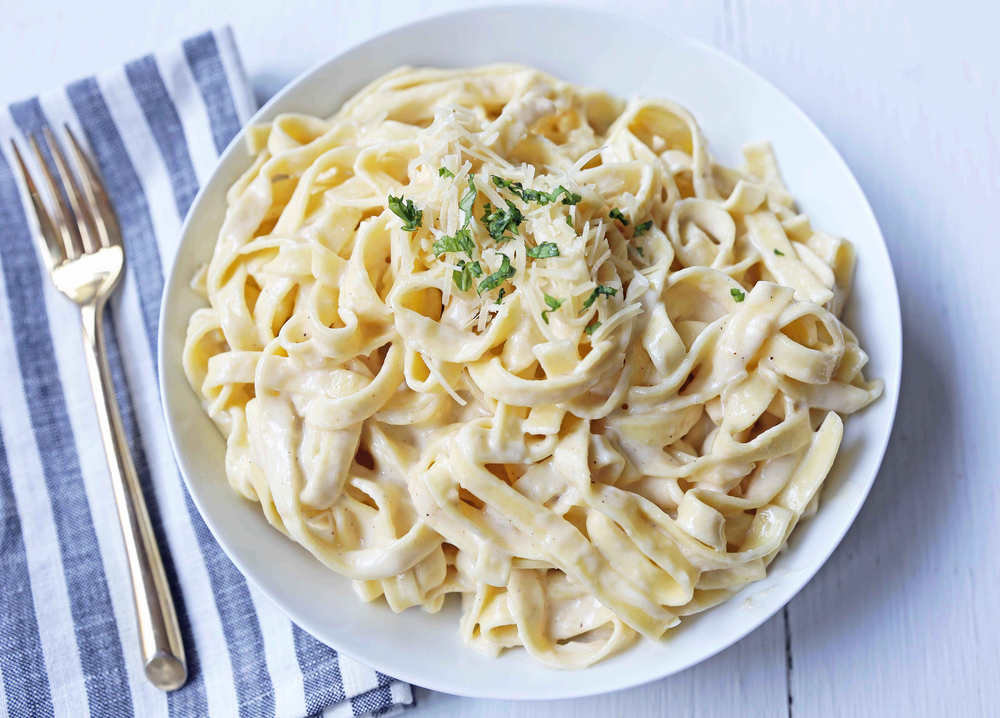

Fettuccine Alfredo

Description
There are certain recipes that are essential to have in your recipe box and one of them has to be a phenomenal Fettuccine alfredo recipe. Years ago, when I was teaching kids' cooking classes, this was one of the first things I taught them. Almost every single kid around goes crazy for alfredo sauce! It is so easy to make a homemade alfredo sauce that you will never buy the jarred variety again!
This homemade alfredo sauce is made with simple ingredients -- butter, parmesan cheese, garlic, heavy cream, and salt. It's a 5-ingredient alfredo sauce that is beyond easy!
Ingredients
- Fettuccine pasta
- Butter
- Garlic clove
- Heavy cream
- Salt
- Parmesan cheese
- Pepper
- Italian parsley
Steps
- In a large pot, heat water over high heat until boiling. Add salt to season the water. Once it is boiling, add fettuccine and cook according to package instructions.
- In a large skillet or pan, heat butter over medium heat. Add minced garlic and cook for 1 to 2 minutes. Stir in heavy cream.
- Let heavy cream reduce and cook for 5 to 8 minutes. Add half of the parmesan cheese to the mixture and whisk well until smooth. Keep over heat and whisk well until cheese is melted.
- Save some pasta water. The pasta water is full of flavor and can be used to thin out the sauce.
- Toss alfredo sauce with fettuccine pasta and add half of the parmesan cheese. Once it is tossed, garnish with the remaining parmesan cheese. Add a little pasta water if it needs to be thinned out.
- Garnish with Italian parsley, if so desired.
Back